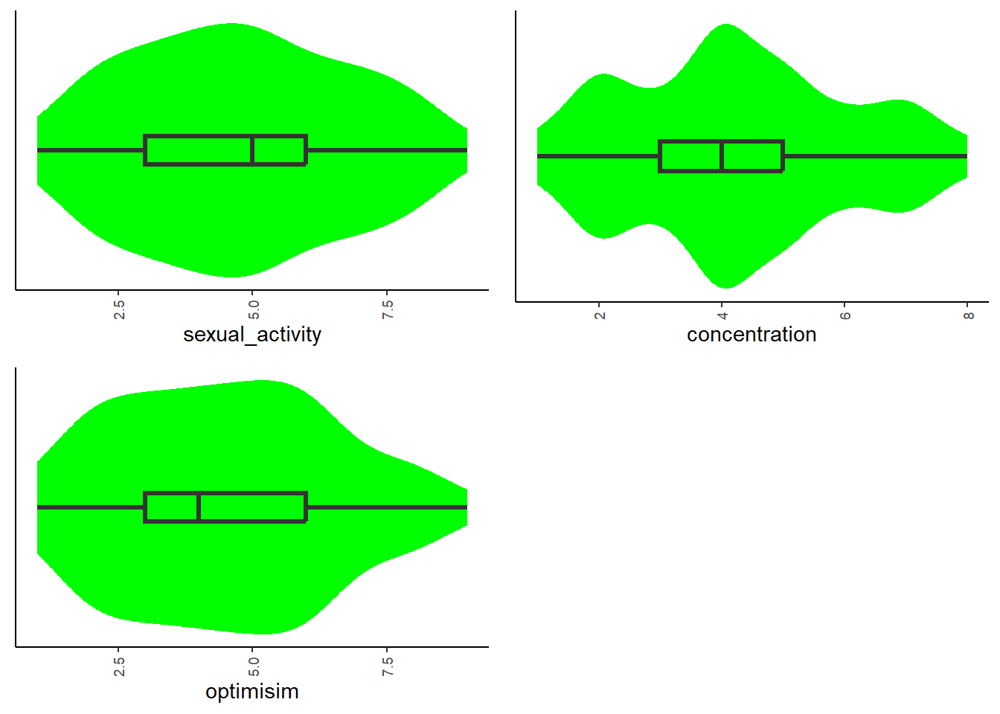
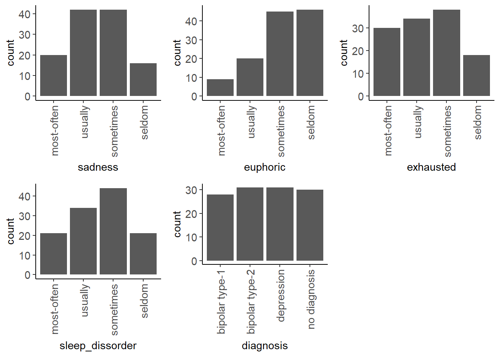
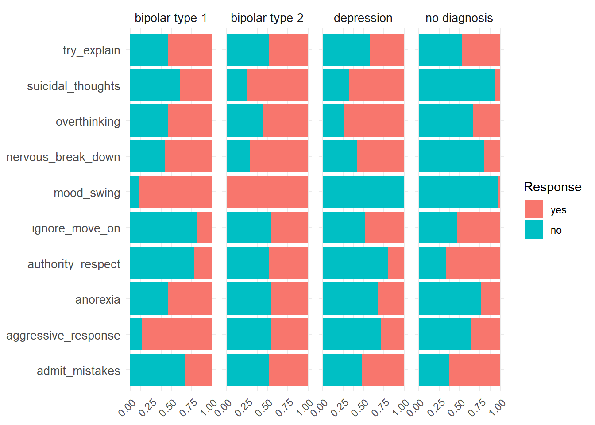
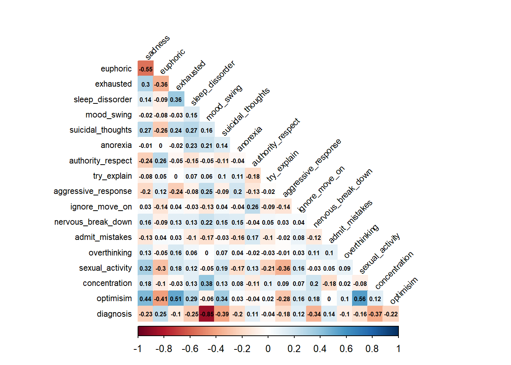

source("functions.R") # Loading custom functions for EDA
options(conflicts.policy = "depends.ok", # Deals with package conflicts
dplyr.print_max=Inf)
tidymodels_conflictRules() # Deals with package conflictsMental Disorder Classification: EDA and Data Cleaning
Notes
This R script is designed to clean and examine the data before loading it into a Python (Jupyter Notebook) environment. The goal is to prepare the data for creating a neural network model that can determine an individual’s diagnosed disorder based on their symptoms. The script performs essential steps including reading the data, renaming variables, converting variable types, and conducting exploratory data analysis (EDA) to ensure the dataset is clean and ready for modeling.
Setup
Load Custom Functions and Set Options
Set conflict policies to reduce errors associated with function conflicts and load custom functions for EDA.
Load Required Packages
Load all packages needed for this project.
knitr::opts_chunk$set(warning = FALSE)
library(tidyverse)
library(tidymodels)
library(knitr)
library(kableExtra, exclude = c("group_rows"))
library(cowplot, include.only = c("plot_grid", "theme_half_open"))
library(corrplot, include.only = "corrplot.mixed")Setup Enviroment
Set up some other environment settings
options(tibble.width = Inf, tibble.print_max = Inf)
theme_set(theme_classic()) Read and Setup Dataframe
Read Data
Read in the data and perform initial cleaning steps. Call here::here() to set your root path to be inside of the folder.
diagnose_all <- read_csv(here::here("disorder_classification.csv"),
col_types = cols()) |>
janitor::clean_names() |>
mutate(across(where(is.character), str_to_lower)) |>
glimpse()Rows: 120
Columns: 19
$ patient_number <chr> "patient01", "patient02", "patient03", "patient04"…
$ sadness <chr> "usually", "usually", "sometimes", "usually", "usu…
$ euphoric <chr> "seldom", "seldom", "most-often", "seldom", "usual…
$ exhausted <chr> "sometimes", "usually", "sometimes", "usually", "s…
$ sleep_dissorder <chr> "sometimes", "sometimes", "sometimes", "most-often…
$ mood_swing <chr> "yes", "no", "yes", "yes", "no", "no", "yes", "no"…
$ suicidal_thoughts <chr> "yes", "yes", "no", "yes", "no", "yes", "yes", "no…
$ anorexia <chr> "no", "no", "no", "yes", "no", "yes", "yes", "no",…
$ authority_respect <chr> "no", "no", "no", "no", "no", "yes", "no", "no", "…
$ try_explain <chr> "yes", "no", "yes", "yes", "no", "no", "yes", "yes…
$ aggressive_response <chr> "no", "no", "yes", "no", "no", "no", "yes", "no", …
$ ignore_move_on <chr> "no", "no", "no", "no", "no", "no", "no", "no", "n…
$ nervous_break_down <chr> "yes", "no", "yes", "no", "yes", "no", "yes", "no"…
$ admit_mistakes <chr> "yes", "no", "yes", "no", "yes", "yes", "yes", "no…
$ overthinking <chr> "yes", "no", "no", "no", "yes", "no", "yes", "yes"…
$ sexual_activity <dbl> 3, 4, 6, 3, 5, 3, 7, 5, 8, 3, 5, 8, 9, 5, 5, 6, 5,…
$ concentration <dbl> 3, 2, 5, 2, 5, 5, 2, 5, 2, 4, 7, 4, 2, 7, 4, 4, 4,…
$ optimisim <dbl> 4, 5, 7, 2, 6, 5, 9, 5, 3, 2, 8, 9, 4, 5, 2, 6, 6,…
$ expert_diagnose <chr> "bipolar type-2", "depression", "bipolar type-1", …Rename Variables
Rename variables for better legibility and consistency. Change ‘normal’ to ‘no diagnosis’.
diagnose_all <- diagnose_all |>
rename(diagnosis = expert_diagnose,
subid = patient_number)
diagnose_all <- diagnose_all |>
mutate(diagnosis = ifelse(diagnosis == "normal",
"no diagnosis", diagnosis))Cleaning EDA
This section focuses on EDA steps necessary for cleaning the full dataset. Be mindful of which aspects of the dataset you explore at this stage to prevent information leakage between later training and validation sets.
Explore Variables
Explore the dataset to understand its structure and check for any anomalies.
diagnose_all |>
skim_all() | Name | diagnose_all |
| Number of rows | 120 |
| Number of columns | 19 |
| _______________________ | |
| Column type frequency: | |
| character | 16 |
| numeric | 3 |
| ________________________ | |
| Group variables | None |
Variable type: character
| skim_variable | n_missing | complete_rate | min | max | empty | n_unique | whitespace |
|---|---|---|---|---|---|---|---|
| subid | 0 | 1 | 9 | 10 | 0 | 120 | 0 |
| sadness | 0 | 1 | 6 | 10 | 0 | 4 | 0 |
| euphoric | 0 | 1 | 6 | 10 | 0 | 4 | 0 |
| exhausted | 0 | 1 | 6 | 10 | 0 | 4 | 0 |
| sleep_dissorder | 0 | 1 | 6 | 10 | 0 | 4 | 0 |
| mood_swing | 0 | 1 | 2 | 3 | 0 | 2 | 0 |
| suicidal_thoughts | 0 | 1 | 2 | 3 | 0 | 2 | 0 |
| anorexia | 0 | 1 | 2 | 3 | 0 | 2 | 0 |
| authority_respect | 0 | 1 | 2 | 3 | 0 | 2 | 0 |
| try_explain | 0 | 1 | 2 | 3 | 0 | 2 | 0 |
| aggressive_response | 0 | 1 | 2 | 3 | 0 | 2 | 0 |
| ignore_move_on | 0 | 1 | 2 | 3 | 0 | 2 | 0 |
| nervous_break_down | 0 | 1 | 2 | 3 | 0 | 2 | 0 |
| admit_mistakes | 0 | 1 | 2 | 3 | 0 | 2 | 0 |
| overthinking | 0 | 1 | 2 | 3 | 0 | 2 | 0 |
| diagnosis | 0 | 1 | 10 | 14 | 0 | 4 | 0 |
Variable type: numeric
| skim_variable | n_missing | complete_rate | mean | sd | p0 | p25 | p50 | p75 | p100 | skew | kurtosis |
|---|---|---|---|---|---|---|---|---|---|---|---|
| sexual_activity | 0 | 1 | 4.74 | 2.01 | 1 | 3 | 5 | 6 | 9 | 0.11 | -0.91 |
| concentration | 0 | 1 | 4.25 | 1.80 | 1 | 3 | 4 | 5 | 8 | 0.19 | -0.75 |
| optimisim | 0 | 1 | 4.47 | 1.99 | 1 | 3 | 4 | 6 | 9 | 0.18 | -0.80 |
Variable class notes: All variables are either of type character or of type numeric. We will think more carefully about the factors, etc., in the EDA modeling script. All variables are read in as expected, including the character variables since earlier we set the factor variables to character. We can also note that there are no missing values.
Numeric Variables
Examine the range and distribution of numeric variables.
diagnose_all |>
skim_some() |>
filter(skim_type == "numeric") |>
select(skim_variable, numeric.p0, numeric.p100)# A tibble: 3 × 3
skim_variable numeric.p0 numeric.p100
<chr> <dbl> <dbl>
1 sexual_activity 1 9
2 concentration 1 8
3 optimisim 1 9Numeric variable notes: Numeric values appear to be in the expected range. There were no numeric values that make sense to convert to factor variables to examine min/max values. These numeric variables were originally scored on a range from 1-10, so this result makes sense.
Categorical Variables
Set Categorical levels
Convert specific columns into categorical factors with defined levels.
feeling_levels <- function(df, columns, levels) {
df <- df |>
mutate(across(all_of(columns), ~ factor(.x, levels = levels)))
return(df)
}
columns_feeling <- c("sadness", "euphoric",
"exhausted", "sleep_dissorder")
factor_levels <- c("most-often", "usually",
"sometimes", "seldom")
diagnose_all <- feeling_levels(diagnose_all,
columns_feeling,
factor_levels)Convert specified columns into categorical factors with “yes” and “no” values.
convert_to_yesno <- function(df, columns) {
for (col in columns) {
if (col %in% names(df)) {
df[[col]] <- factor(df[[col]], levels = c("yes", "no"))
} else {
warning(paste("Column", col, "not found in the dataframe."))
}
}
return(df)
}
columns_yesno <- c("mood_swing", "suicidal_thoughts", "anorexia",
"authority_respect", "try_explain",
"aggressive_response", "ignore_move_on",
"nervous_break_down", "admit_mistakes",
"overthinking")
diagnose_all <- convert_to_yesno(diagnose_all, columns_yesno)Examine Variable Levels
Print the levels of each categorical variable to confirm proper levels.
diagnose_all |>
select(where(is.factor)) |>
names() |>
walk(~ {
column <- diagnose_all[[.x]]
cat("Variable:", .x, "\n")
print(levels(column))
cat("\n")
})Variable: sadness
[1] "most-often" "usually" "sometimes" "seldom"
Variable: euphoric
[1] "most-often" "usually" "sometimes" "seldom"
Variable: exhausted
[1] "most-often" "usually" "sometimes" "seldom"
Variable: sleep_dissorder
[1] "most-often" "usually" "sometimes" "seldom"
Variable: mood_swing
[1] "yes" "no"
Variable: suicidal_thoughts
[1] "yes" "no"
Variable: anorexia
[1] "yes" "no"
Variable: authority_respect
[1] "yes" "no"
Variable: try_explain
[1] "yes" "no"
Variable: aggressive_response
[1] "yes" "no"
Variable: ignore_move_on
[1] "yes" "no"
Variable: nervous_break_down
[1] "yes" "no"
Variable: admit_mistakes
[1] "yes" "no"
Variable: overthinking
[1] "yes" "no" Modeling EDA
Univariate Distributions
Numeric Variables
Examine the distributions of numeric variables using box and violin plots.
diagnose_all |>
select(where(is.numeric)) |>
names() |>
map(\(name) plot_box_violin(df = diagnose_all, x = name)) |>
plot_grid(plotlist = _, ncol = 2)
Summary statistics for numeric variables.
diagnose_all |>
skim_all() |>
filter(skim_type == "numeric")| Name | diagnose_all |
| Number of rows | 120 |
| Number of columns | 19 |
| _______________________ | |
| Column type frequency: | |
| numeric | 3 |
| ________________________ | |
| Group variables | None |
Variable type: numeric
| skim_variable | n_missing | complete_rate | mean | sd | p0 | p25 | p50 | p75 | p100 | skew | kurtosis |
|---|---|---|---|---|---|---|---|---|---|---|---|
| sexual_activity | 0 | 1 | 4.74 | 2.01 | 1 | 3 | 5 | 6 | 9 | 0.11 | -0.91 |
| concentration | 0 | 1 | 4.25 | 1.80 | 1 | 3 | 4 | 5 | 8 | 0.19 | -0.75 |
| optimisim | 0 | 1 | 4.47 | 1.99 | 1 | 3 | 4 | 6 | 9 | 0.18 | -0.80 |
Numeric Univariate Notes: Sexual Activity, Concentration, and Optimism exhibit minimal skew, indicating nearly symmetric distributions. Sexual Activity has a skew of approximately 0.11, while Concentration shows a slightly higher skew of around 0.18, indicating a near-symmetric distribution with slightly lower average scores. Optimism shows a skew of 0.17, suggesting a slight right skew with a mean score of 4.39.
Categorical Variables
Examine the distributions of categorical variables using bar plots.
diagnose_all|>
select(sadness, euphoric,
exhausted, sleep_dissorder, diagnosis) |>
names() |>
map(\(name) plot_bar(df = diagnose_all, x = name)) |>
plot_grid(plotlist = _, ncol = 3) 
Univariate categorical variable notes: Each variable exhibits an evenly spread response category across the majority of these variables, reflecting that certain responses are not chosen more frequently by respondents. Conversely, the diagnosis variable displays a balanced distribution across its categories. These patterns highlight general trends in how respondents report their experiences and conditions related to these variables.
Bivariate Distributions
Categorical Variables
Transform binary variables into a long format for easier analysis of yes/no values.
diagnose_long <- diagnose_all |>
select(all_of(columns_yesno), diagnosis) |>
pivot_longer(cols = all_of(columns_yesno),
names_to = "variable",
values_to = "response")plot_data <- diagnose_long |>
group_by(variable, diagnosis, response) |>
summarise(count = n(), .groups = 'drop') |>
group_by(variable, diagnosis) |>
mutate(prop = count / sum(count))
ggplot(plot_data, aes(x = prop, y = variable, fill = response)) +
geom_bar(stat = "identity") +
facet_wrap(~ diagnosis, ncol = 4) +
labs(x = NULL, y = NULL, fill = "Response") +
theme_minimal() +
theme(axis.title.x = element_blank(),
axis.title.y = element_blank(),
axis.text.x = element_text(angle = 45, hjust = 1),
axis.text.y = element_text(size = 10),
strip.text = element_text(size = 10)) 
Bivariate categorical variable notes: The distributions of responses across the four different disorders—bipolar type-1, bipolar type-2, depression, and no diagnosis—show a generally uniform pattern with a few exceptions. For most variables, responses are split between “yes” and “no” across the disorders, indicating a varying reporting of symptoms and behaviors. However, some variables, such as mood_swing under bipolar type-2 and depression, have only one response recorded, possibly due to limited data for these conditions, or a lack of variability.
Correlations
# Define the mappings
# These are changed temporarily to examine correlations of the focal variable
survey_mapping <- c('most-often' = 0, 'usually' = 1, 'sometimes' = 2, 'seldom' = 3)
diagnosis_mapping <- c('no diagnosis' = 0,
'depression' = 1,
'bipolar type-1' = 2,
'bipolar type-2' = 3)
# Compute the correlation matrix with the mappings applied
cor_matrix <- diagnose_all |>
mutate(across(6:15, ~ ifelse(. == "yes", 0, 1))) |>
mutate(across(everything(), ~ ifelse(. %in% names(survey_mapping),
survey_mapping[.],
.))) |>
mutate(diagnosis = as.numeric(factor(diagnosis,
levels = names(diagnosis_mapping),
labels = diagnosis_mapping))) |>
select(where(is.numeric)) |>
cor(use = "pairwise.complete.obs")corrplot::corrplot(cor_matrix,
type = "lower",
method = "color",
tl.col = "black",
tl.srt = 45,
tl.cex = 0.7,
number.cex = 0.5,
addCoef.col = "black",
diag = FALSE)
Correlation notes: The diagnosis variable shows overall moderate correlations with other numeric variables, with both positive and negative associations. This suggests a varied relationship between the diagnosis and the other symptoms measured.
Save Cleaned Data
diagnose_all |>
write_csv(here::here("clean_data.csv"))